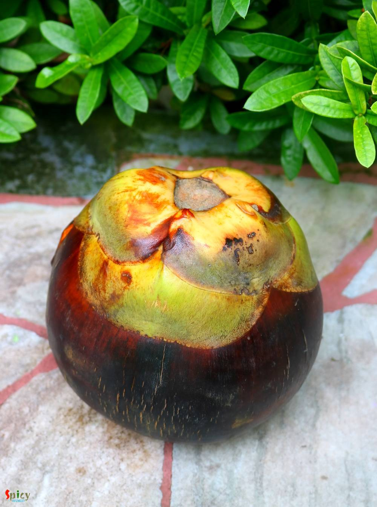
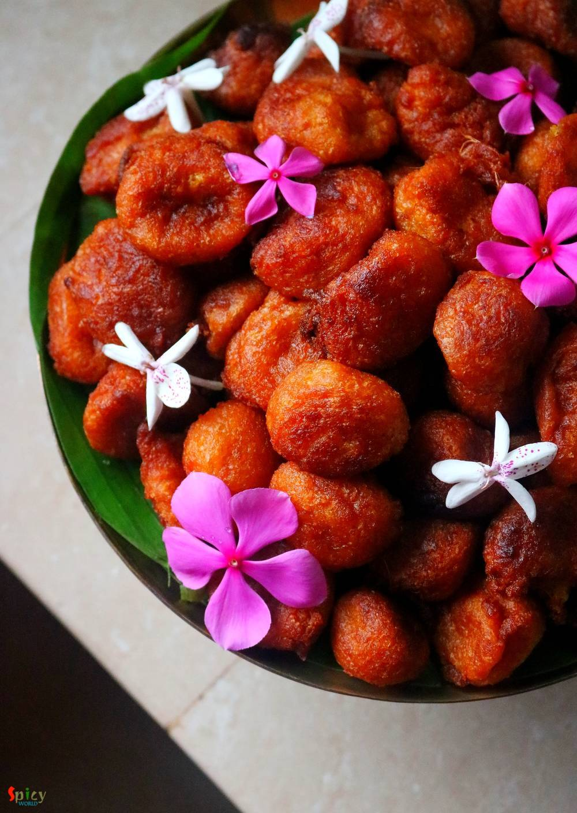

Simple and Easy Recipes
Previous Post
Taaler Bora (Fuluri) / Sweet Palm Fritters
© 2016 Spicy World, Published on: Aug 23, 2020
Taaler Bora or Sweet palm fritters are made from the ripe, juicy palm fruit. From younger to elder everybody loves Taaler Bora. Fully riped (black colored) palm is best for this recipe. Let me tell you a truth - it is not very easy to get the fluffy, soft textured Taaler Bora. I will explain every steps in detail to help you guys. These fritters are must item for 'Janmastami'. They tastes yumm! Do try this recipe in your kitchen and let me know how it turned out for you.
 / Sweet Palm Fritters")
Ingredients
- 1 big size (1 kg) ripe palm (black colored).
- 300 grams of wheat flour or atta.
- 500 grams of sugar.
- 100 grams of freshly grated coconut.
- 100 grams of full cream milk powder.
- 1 Teaspoon of salt.
- Pinch of baking soda.
- 50 grams of rice flour or rice paste.
- 4 cups of vegetable oil for frying.
- Little water.
 / Sweet Palm Fritters")
 / Sweet Palm Fritters")
Steps

Remove the thick skin from the palm.
Separate the two or three parts of the palm.
Dip one part in very little water and start grating.
The underneath bowl will catch the thick pulp(500 grams). Do not use lot of water.
This grating process will take some time.
If the pulp becomes watery then cook it on low flame for 3-4 minutes to make it thick.
In that pulp add wheat flour, salt, baking soda, sugar, rice flour. Mix well. All purpose flour or maida sometimes make the fritters hard and rubbery.
If you don't have rice flour, soak some rice in little water then make a paste out of it. Add this paste in the pulp.
Then add milk powder and grated coconut, give everything a good mix. Beat the batter for 2-3 minutes.
Do not add too much flour in the batter, the fritters will become hard. That is why the pulp needs to be very thick.
In the meantime heat vegetable oil in a pan.
Drop little by little batter with your hand in medium hot oil.
Fry them on medium flame until they become golden in color. Then take them out from oil.
They taste better next day.
Your taaler bora is ready to serve.
Serve them warm ..
 / Sweet Palm Fritters (Final)")
Previous Post